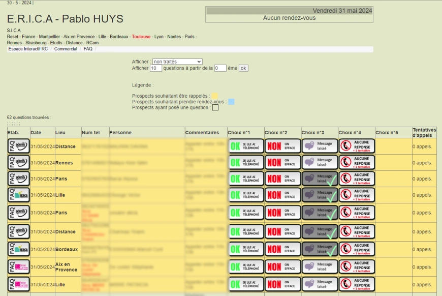
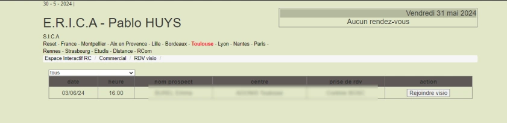
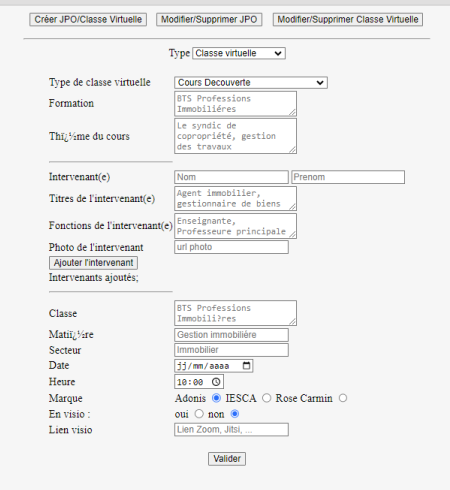
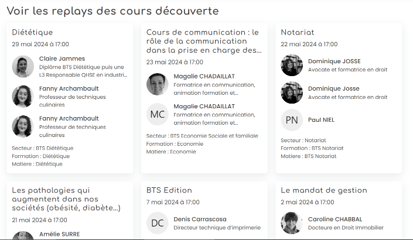

Seconde mission: débogage de l'intranet
Dans cet article, je vous raconte comment s'est déroulée ma seconde mission au sein du groupe Adonis.
Détails de la mission
Contexte initial et accès au système
Après avoir complété ma première mission d'intégration de contenu sur le site web de l'entreprise, ma deuxième mission m'a conduit à déboguer un outil de gestion interne essentiel pour le Groupe Adonis. Cet outil, accessible depuis l'intranet de l'entreprise, est utilisé par les employés pour répondre directement aux emails, mettre à jour les statuts d'appel, et gérer les communications avec les clients. Cependant, l'outil présentait plusieurs problèmes majeurs : les emails ne s'envoyaient pas correctement, et des erreurs PHP étaient signalées. De plus, les fonctionnalités pour gérer les statuts d'appel, comme marquer les utilisateurs comme injoignables, indiquer si un rappel avait été effectué, et incrémenter le nombre d'appels effectués, ne fonctionnaient pas comme prévu.
Contrairement aux pratiques habituelles de développement utilisant des environnements de test et des systèmes de versionnage comme Git, j'ai eu accès aux fichiers du système directement via FileZilla. Cela signifie que toutes les modifications étaient immédiatement reflétées en ligne et visibles pour tous les utilisateurs, sans possibilité de tester les changements dans un environnement de pré-production. Cette contrainte a rendu le processus de débogage particulièrement délicat et fastidieux.
* Voici à quoi ressemble l'outil pour les utilisateurs.
Débogage et réécriture du code de messagerie
Réécriture du code de messagerie
En utilisant FileZilla, j'ai accédé aux fichiers PHP sur le serveur et découvert que le code de gestion des emails était extrêmement ancien, datant de 2008. Le code était écrit avec des pratiques obsolètes et manquait de certaines fonctionnalités modernes nécessaires pour une gestion fiable des erreurs et des exceptions. Comprendre ce code, avec ses nombreux fragments et sa logique vieillissante, a été une tâche complexe.
J'ai décidé de réécrire entièrement le code de messagerie pour le rendre plus robuste et compatible avec les pratiques actuelles. Cela a impliqué la mise à jour des configurations du serveur de messagerie, l'utilisation de bibliothèques PHP modernes pour gérer l'envoi des emails (Librairire PHPMailer), et l'ajout de mécanismes de gestion des erreurs pour mieux capturer et gérer les exceptions. J'ai également intégré des tests pour vérifier la fonctionnalité de l'envoi des emails dans différentes conditions.
Gestion des statuts d'appel :
J'ai examiné les scripts PHP et les requêtes SQL utilisés pour gérer les statuts d'appel. J'ai identifié plusieurs problèmes, dont des requêtes mal formées et des erreurs dans la gestion des mises à jour d'état.
J'ai corrigé les requêtes SQL pour assurer une mise à jour correcte des statuts d'appel dans la base de données. J'ai également révisé la logique de traitement des données pour garantir que les informations sur les appels étaient correctement enregistrées et reflétées dans l'interface utilisateur.
Activités supplémentaires réalisées
Mise à jour de l'outil de visioconférence
Contexte et problème rencontré :
Un des outils internes utilisés par les employés de Groupe Adonis permettait de rejoindre des rendez-vous en visioconférence directement depuis l'intranet. Cependant, cet outil présentait un problème majeur : les requêtes HTTP côté JavaScript étaient obsolètes, car l'API externe utilisée pour les visioconférences avait changé. Cela empêchait les utilisateurs de rejoindre les réunions correctement.
Solution apportée :
Pour résoudre ce problème, j'ai commencé par consulter la documentation de l'API pour comprendre les changements apportés. J'ai alors contacté un développeur interne pour obtenir le nouvel endpoint de l'API, qui était nécessaire pour mettre à jour les requêtes HTTP dans le code JavaScript.
Mise à jour du code : J'ai modifié les appels API dans le code JavaScript en remplaçant les anciens endpoints par les nouveaux fournis. Cela a permis à l'outil de se reconnecter correctement à l'API de visioconférence.
Tests et vérification : Une fois les modifications apportées, j'ai testé l'outil pour m'assurer que les utilisateurs pouvaient maintenant rejoindre les visioconférences sans problème.
Défis rencontrés : Le principal défi a été de localiser et comprendre l'ancienne intégration de l'API, ainsi que de coordonner avec le développeur pour obtenir les informations correctes. Cependant, une fois le nouvel endpoint fourni, la mise à jour a été relativement simple.
* Voici à quoi ressemble l'outil pour rejoindre une visioconférence.
Réparation du formulaire de création de classe virtuelle
Contexte et problème rencontré
Un autre outil important était un formulaire permettant de créer des classes virtuelles pour les formations proposées par le Groupe Adonis. Malheureusement, ce formulaire ne fonctionnait plus correctement à cause de problèmes liés à la base de données. De plus, la version précédente du formulaire ne permettait pas la création de plusieurs intervenants pour une même classe, ce qui était désormais une exigence.
Solution apportée
Analyse des problèmes de base de données : J'ai commencé par examiner les tables de la base de données associées au formulaire. J'ai constaté que les schémas de table ne correspondaient plus aux besoins actuels, ce qui causait des erreurs lors de la soumission du formulaire.
Mise à jour des modèles de tables : J'ai étudié les modèles de tables existants et réalisé les modifications nécessaires pour corriger les problèmes de base de données. J'ai ajusté les structures des tables et les relations pour permettre la création correcte de classes virtuelles avec plusieurs intervenants.
Refonte du formulaire : J'ai modifié le formulaire pour qu'il puisse désormais gérer plusieurs intervenants. Cela impliquait l'ajout de nouveaux champs dans le formulaire et la mise à jour du code côté serveur pour traiter ces nouvelles informations.
Tests et validation : J'ai testé le formulaire mis à jour pour m'assurer qu'il fonctionnait correctement et permettait la création de classes virtuelles avec plusieurs intervenants comme prévu.
Défis rencontrés : L'un des principaux défis a été de comprendre et adapter les modèles de tables de la base de données pour répondre aux nouvelles exigences. La refonte du formulaire pour gérer plusieurs intervenants a également nécessité des ajustements importants tant au niveau de la base de données que du code côté serveur.
* Voici à quoi ressemble le formulaire pour les utilisateurs.
* Voici le résultat sur le site web (www.etudis.net/cours-decouvertes)
Retour d'expérience
Ressenti global sur la mission
La mission de débogage de l'outil de gestion interne a été particulièrement enrichissante malgré les défis rencontrés. Travailler directement en ligne sans environnement de test a ajouté une dimension de complexité et de stress. La réécriture du code de messagerie, en particulier, a été une tâche complexe en raison de son ancienneté. Les activités supplémentaires, telles que la mise à jour de l'outil de visioconférence et la réparation du formulaire de création de classe virtuelle, ont également présenté des défis spécifiques mais ont permis d'améliorer les outils internes et d'optimiser les processus.